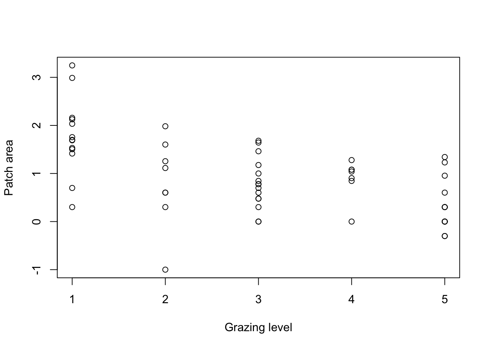
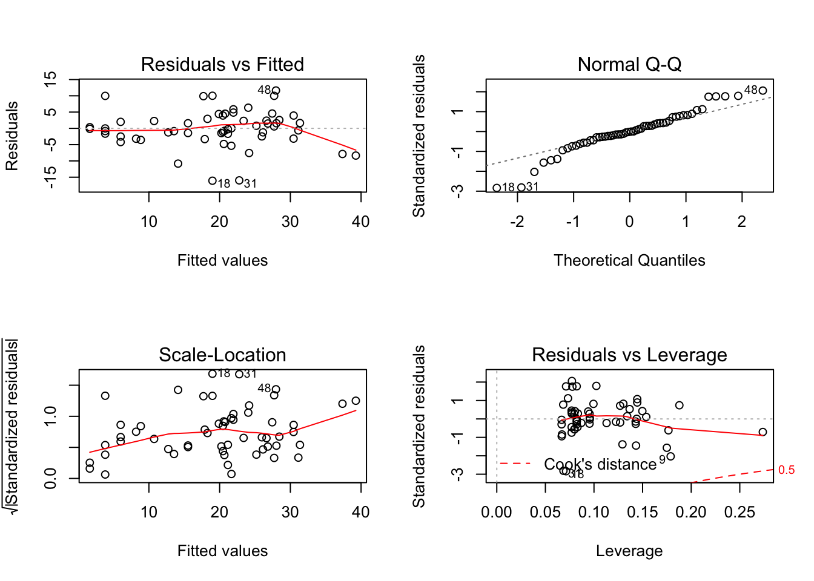
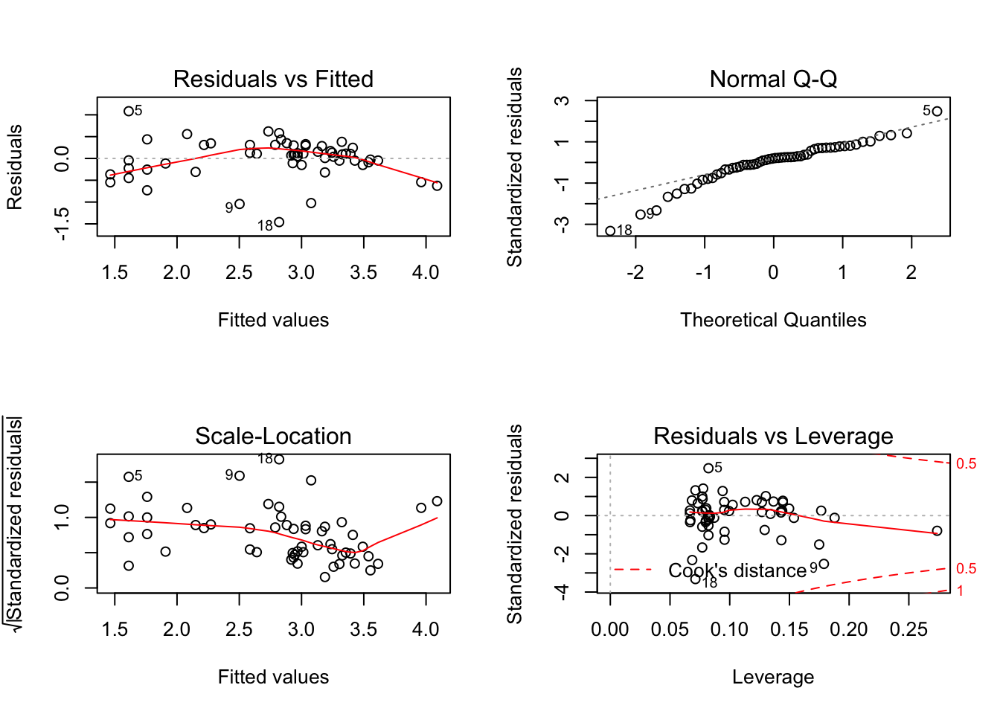
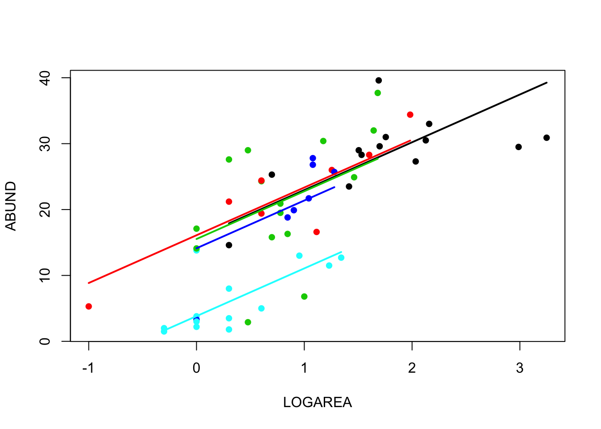
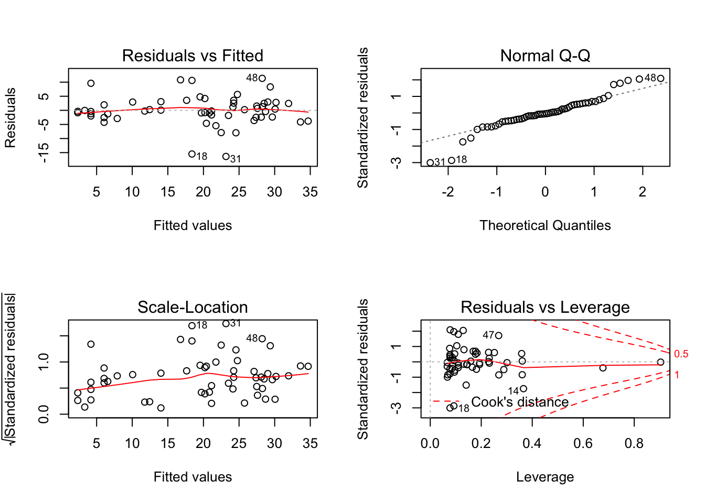
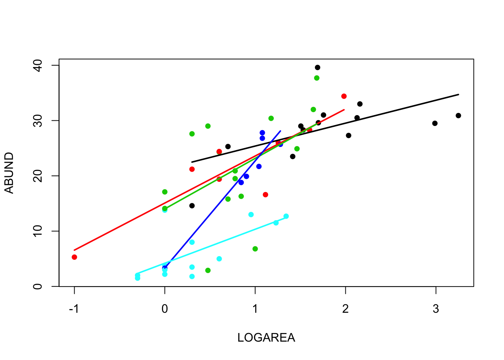

Exercise Solutions
Exercise 1: Linear model with additive continuous and categorical predictors (= explanatory variables)
This exercise builds on the linear model with one continuous predictor, and the linear model with one categorical predictor, by adding these two sources of variation in the same model.
- As in previous exercises, either create a new R script (perhaps call it linear_model_3) or continue with your previous R script in your RStudio Project. Again, make sure you include any metadata you feel is appropriate (title, description of task, date of creation etc) and don’t forget to comment out your metadata with a
#at the beginning of the line.
- Import the data file ‘loyn.txt’ into R and take a look at the structure of this dataframe using the
str()function. We know that the abundance of birdsABUNDincreases quickly with the area of the patchLOGAREA, and more slowly for the larger patches (a saturating “log-linear relationship”). We now also know that bird abundance changes in a non-linear way with the grazing intensityFGRAZE. But how do these effects combine together? Would a small patch with low grazing intensity have more birds than a larger patch with high grazing intensity? Could the poor fit of theABUND ~ LOGAREAmodel for the large patches be improved, if we accounted for grazing intensity in the patches?
loyn <- read.table("./data/loyn.txt", header = TRUE)
str(loyn)
## 'data.frame': 56 obs. of 8 variables:
## $ Site : int 1 2 3 4 5 6 7 8 9 10 ...
## $ ABUND : num 5.3 2 1.5 17.1 13.8 14.1 3.8 2.2 3.3 3 ...
## $ AREA : num 0.1 0.5 0.5 1 1 1 1 1 1 1 ...
## $ DIST : int 39 234 104 66 246 234 467 284 156 311 ...
## $ LDIST : int 39 234 311 66 246 285 467 1829 156 571 ...
## $ YR.ISOL: int 1968 1920 1900 1966 1918 1965 1955 1920 1965 1900 ...
## $ GRAZE : int 2 5 5 3 5 3 5 5 4 5 ...
## $ ALT : int 160 60 140 160 140 130 90 60 130 130 ...
- As previously we want to treat
AREAas a log-transformed area to limit the influence of the few disproportionately large patches, andGRAZEas a categorical variable with five levels. So the first thing we need to do is create the corresponding variables in the loyn dataframe, calledLOGAREAandFGRAZE.
loyn$LOGAREA <- log10(loyn$AREA)
# create factor GRAZE as it was originally coded as an integer
loyn$FGRAZE <- factor(loyn$GRAZE)
- Explore the relationship between grazing and patch area, using a scatterplot. Hint: you may want to use
GRAZErather thanFGRAZEfor this. Is there any variability in patch area within each grazing level? Is the sampling design balanced, i.e., is the whole range of patch areas evenly represented at each grazing level?

# There is a good spread of patch areas within each grazing level overall,
# although there is a trend for more grazing the smaller the patch is.
# the lowest level of grazing intensity happens to be predominantly in larger patches (including the two monster patches)
# How would we expect adding grazing level to the LOGAREA model to affect the predictions of the model? Think particularly of the largest two patches which were previously overestimated by the model (negative residuals - see the linear model 1 exercise)?
# Since the lowest grazing levels appear to be associated with the highest bird abundances,
# we could expect a model combining area and grazing level to predict an even higher abundance for these patches
# this would not improve the situation for these patches, at least. But let's find out if that's the case!
- You could explore the joint effect of
FGRAZEandLOGAREAonABUND, using panel plots. Hint: See the functioncoplotin the Data exploration lecture slide 24, and/or the help page forcoplot. Factor levels increase from the bottom-left panel to the top-right panel. What pattern do you see? What do you expect your model results to look like?

# There is a lot of variation in there, but:
# The mean abundance seems to decrease as grazing levels increase. Most noticeable in the highest grazing level.
# For a given grazing level, the abundance seems to increase with the log-patch area.
# It is unclear from this if the slope of the log-area effect is different between grazing levels
- Fit an appropriate linear model in R to explain the variation in the response variable,
ABUNDwith the explanatory variablesLOGAREAandFGRAZEacting additively. Hint:+is the addition symbol!. Remember to use thedata =argument. Assign this linear model to an appropriately named object, likebirds.add.1(yes, you could be right if you sense there are more of these to come).
- Produce the ANOVA table using the
anova()function on the model object. What null hypotheses are being tested? Hint: theanova()function performs sequential tests. Do you reject or fail to reject the null hypotheses? What percentage of variation does the model explain overall? Hint: (SST-SSE)/SST. How much doLOGAREAandFGRAZEexplain respectively?
anova(birds.add.1)
## Analysis of Variance Table
##
## Response: ABUND
## Df Sum Sq Mean Sq F value Pr(>F)
## LOGAREA 1 3471.0 3471.0 100.2944 1.530e-13 ***
## FGRAZE 4 1136.5 284.1 8.2101 3.598e-05 ***
## Residuals 50 1730.4 34.6
## ---
## Signif. codes: 0 '***' 0.001 '**' 0.01 '*' 0.05 '.' 0.1 ' ' 1
# null hypothesis 1: There is no effect of LOGAREA on ABUND (the coefficient for LOGAREA is zero)
# null hypothesis 2: There is no effect of FGRAZE on ABUND (no difference between grazing levels *after* the effect of LOGAREA)
# the p values are all very small therefore reject both null hypotheses.
# Proportions of variation can all be calculated by hand by copy-paste of the Sum Sq values if you prefer, but
# we can extract the Sums of squares like this:
str(anova(birds.add.1)) # examine the structure of the returned object
## Classes 'anova' and 'data.frame': 3 obs. of 5 variables:
## $ Df : int 1 4 50
## $ Sum Sq : num 3471 1137 1730
## $ Mean Sq: num 3471 284.1 34.6
## $ F value: num 100.29 8.21 NA
## $ Pr(>F) : num 1.53e-13 3.60e-05 NA
## - attr(*, "heading")= chr "Analysis of Variance Table\n" "Response: ABUND"
birds.add.1.SS<- anova(birds.add.1)$'Sum Sq' # store values of interest
birds.add.1.SS # checking that we have extracted the Sums of squares as intended
## [1] 3470.985 1136.545 1730.399
birds.add.1.SST<- sum(anova(birds.add.1)$'Sum Sq') # compute SST
# proportion of variation in the data explained by the model:
(birds.add.1.SST - birds.add.1.SS[3]) / birds.add.1.SST # 0.7269773
## [1] 0.7269773
# proportion of variation in the data explained by predictors:
(birds.add.1.SS[1:2]) / birds.add.1.SST # 0.5476530 0.1793243
## [1] 0.5476530 0.1793243
# So that's 55% for LOGAREA and 18% for FGRAZE after LOGAREA
- Since the
anova()function does sequential tests of the effects, the results could be different if we putFGRAZEfirst. Run the corresponding model and its analysis of variance. What null hypotheses are being tested? Do you reject or fail to reject the null hypotheses? What percentage of variation does the model explain overall? Hint: (SST-SSE)/SST. How much doLOGAREAandFGRAZEexplain respectively?
birds.add.2 <- lm(ABUND ~ FGRAZE + LOGAREA, data = loyn)
anova(birds.add.2)
## Analysis of Variance Table
##
## Response: ABUND
## Df Sum Sq Mean Sq F value Pr(>F)
## FGRAZE 4 3453.7 863.42 24.949 2.156e-11 ***
## LOGAREA 1 1153.8 1153.85 33.340 4.901e-07 ***
## Residuals 50 1730.4 34.61
## ---
## Signif. codes: 0 '***' 0.001 '**' 0.01 '*' 0.05 '.' 0.1 ' ' 1
# null hypothesis 1: There is no effect of FGRAZE on ABUND (no difference between grazing levels)
# null hypothesis 2: There is no effect of LOGAREA on ABUND (the coefficient for LOGAREA is zero *after* the effect of FGRAZE)
# the p values are all very small therefore reject both null hypotheses.
# we can also extract the Sums of squares like this:
birds.add.2.SS<- anova(birds.add.2)$'Sum Sq' # store values of interest
birds.add.2.SST<- sum(anova(birds.add.2)$'Sum Sq') # compute SST
# proportion of variation in the data explained by the model:
(birds.add.2.SST - birds.add.2.SS[3]) / birds.add.2.SST # the same as the previous model
## [1] 0.7269773
# proportion of variation in the data explained by predictors:
(birds.add.2.SS[1:2]) / birds.add.2.SST # 0.5449233 0.1820540
## [1] 0.5449233 0.1820540
# So that's 54% for LOGAREA and 18% for FGRAZE after LOGAREA, essentially reversing the contributions found in the first model.
# Conclusion: here the order matters a lot. This is not too surprising since the design is unbalanced and FGRAZE and LOGAREA covary (they are correlated)
- Use the
summary()function on the first model object to produce the table of parameter estimates. Using this output take each line in turn and answer the following questions: (A) what does this parameter represent, mathematically? (B) What is the biological interpretation of the corresponding estimate? (C) What is the null hypothesis associated with it? (D) Do you reject or fail to reject this hypothesis?
summary(birds.add.1)
##
## Call:
## lm(formula = ABUND ~ LOGAREA + FGRAZE, data = loyn)
##
## Residuals:
## Min 1Q Median 3Q Max
## -16.0849 -2.4793 -0.0817 2.6486 11.6344
##
## Coefficients:
## Estimate Std. Error t value Pr(>|t|)
## (Intercept) 15.7164 2.7674 5.679 6.87e-07 ***
## LOGAREA 7.2472 1.2551 5.774 4.90e-07 ***
## FGRAZE2 0.3826 2.9123 0.131 0.895993
## FGRAZE3 -0.1893 2.5498 -0.074 0.941119
## FGRAZE4 -1.5916 2.9762 -0.535 0.595182
## FGRAZE5 -11.8938 2.9311 -4.058 0.000174 ***
## ---
## Signif. codes: 0 '***' 0.001 '**' 0.01 '*' 0.05 '.' 0.1 ' ' 1
##
## Residual standard error: 5.883 on 50 degrees of freedom
## Multiple R-squared: 0.727, Adjusted R-squared: 0.6997
## F-statistic: 26.63 on 5 and 50 DF, p-value: 5.148e-13
# Here the intercept (baseline) is *NOT* the mean abundance of birds for FGRAZE level 1. It is the predicted `ABUND` for LOGAREA = 0, for FGRAZE level 1.
# the null hypothesis for the intercept is that the intercept = 0.
# As the p value (p < 2e-16) is very small we reject this null hypothesis and conclude that the
# intercept is significantly different from 0. Not a biologically relevant hypothesis test, in this context (in fact totally arbitrary, as the location of the zero is determined by the transformation we chose)
# For LOGAREA, the null hypothesis is that the slope of the relationship
# between LOGAREA and ABUND = 0 (no relationship)
# The remaining estimates are differences (contrasts) between each level and the reference level, FGRAZE1.
# For example the FGRAZE2 estimate is 0.38, so there are 0.38 more birds on average in graze level 2 compared to graze level 1, *for a given patch area*.
# This difference is however not significantly different from zero (p = 0.895993).
# The difference between graze level 5 (FGRAZE5) and the reference FGRAZE1 is
# -11.89 (11.89 fewer birds in graze 5 compared to graze 1), for *an identical patch area*.
# This difference is significantly different from 0 (p = 0.00017) and therefore the mean abundance of birds in graze level 5 is significantly lower than in graze level 1, for the same patch area.
# The Multiple R-square value is as we calculated from the anova table
- Now that you have interpreted all the coefficients, let’s check that it all fits together. Write down the equation of the model with the appropriate parameter estimates from the summary. By hand, calculate the predicted bird abundance (A) for a patch with
LOGAREA= -0.5 andGRAZE= 1, and (B) for a patch withLOGAREA= -0.5 andGRAZE= 3. Can you predict the difference in expected abundance between (A) and (B) before doing the calculation? Hint: the difference betweenGRAZE3andGRAZE1for a given patch area. Now, predict (C) forLOGAREA= 0.5 andGRAZE= 3. What does the difference between (C) and (B) correspond to?
# ABUND = 15.72*(Intercept) + 7.25*LOGAREA + 0.38*FGRAZE2 - 0.19*FGRAZE3 - 1.59*FGRAZE4 - 11.89*FGRAZE5
# Note that (Intercept) = 1 always
# expected abundance for (A): replace LOGAREA by -0.5, and all FGRAZE2...5 by 0
15.72*1 + 7.25*(-0.5) + 0.38*0 - 0.19*0 - 1.59*0 - 11.89*0 # 12.095
## [1] 12.095
# could also extract the model coefficients like this:
birds.add.1.coef<- coef(birds.add.1)
birds.add.1.coef
## (Intercept) LOGAREA FGRAZE2 FGRAZE3 FGRAZE4 FGRAZE5
## 15.7163938 7.2472294 0.3826488 -0.1892869 -1.5915795 -11.8938327
# and multiply by the predictor values to obtain the equivalent prediction (difference due to my own roundings of estimates above)
sum(birds.add.1.coef * c(1, -0.5, 0, 0, 0, 0)) # 12.09278
## [1] 12.09278
# expected abundance for (B): input 1 for the GRAZE3 variable
15.72*1 + 7.25*(-0.5) + 0.38*0 - 0.19*1 - 1.59*0 - 11.89*0 # 11.905
## [1] 11.905
# or
sum(birds.add.1.coef * c(1, -0.5, 0, 1, 0, 0)) # 11.90349
## [1] 11.90349
# the difference (B) 11.90349 - (A) 12.09278 should correspond to the estimate for the GRAZE3 coefficient
# expected abundance for (C)
sum(birds.add.1.coef * c(1, 0.5, 0, 1, 0, 0)) # 19.15072
## [1] 19.15072
# the difference (C) 19.15072 - (B) 11.90349 should coincide with the estimate of the slope for the LOGAREA effect, since there is just one LOGAREA unit of difference and the slope is the change in expected abundance for a 1-unit increase in the predictor.
- Now let’s check the assumptions of your linear model by creating plots of the residuals from the model. Remember, that you can split your plotting device into 2 rows and 2 columns using the
par()function before you create the plots. Check each of the assumptions using these plots and report whether your model meets these assumptions.
# first split the plotting device into 2 rows and 2 columns
par(mfrow = c(2,2))
# now create the residuals plots
plot(birds.add.1)
# To test the normality of residuals assumption we use the Normal Q-Q plot.
# The central residuals are not too far from the Q-Q line but the extremes are too extreme (the tails of the distribution are too long). Some observations, both high and low, are poorly explained by the model.
# The plot of the residuals against the fitted values suggests these extreme residuals happen for intermediate fitted values.
# Looking at the homogeneity of variance assumption (Residuals vs Fitted and Scale-Location plot),
# the graphs are mostly messy, with no clear pattern emerging. There is a hint of smaller variance with the lowest fitted values, which is not ideal.
# This could mean that the homogeneity of variance assumption is not met (i.e. the variances are not the same).
# The observations with the highest leverage don't appear to be overly influential, according to the Cook's distances in the Residuals vs Leverage plot.
# ABUND being bounded by zero, it wouldn't be too surprising that the variance increases with the mean abundance.
# This is often improved by log-transforming the response
loyn$logABUND<- log(loyn$ABUND + 1) # here the natural log
birds.add.3 <- lm(logABUND ~ LOGAREA + FGRAZE, data = loyn)
par(mfrow = c(2,2))
plot(birds.add.3)
# Not this time! Lots of extreme negative residuals generated.
# Back to `birds.add.1` the other issue was the extreme residuals.
# This could be due to missing important predictors from the model, either new predictors altogether,
# or interactions: is it okay to assume the effect of LOGAREA to be the same for all grazing levels?
- Let’s plot the predictions of your initial model to figure out how it really fits the data. Here’s a recipe, using the
predict()function.
- plot the raw data, using a different colour per
FGRAZElevel - for each
FGRAZElevel in turn, - create a sequence of
LOGAREAfrom the minimum value to the maximum within the grazing level (unless you wish to predict outside the range of observed values) - store it in a data frame (e.g.
dat4pred) containing the variablesFGRAZEandLOGAREA.Remember thatFGRAZEis a factor, so it requires double quotes. - add a predicted column containing the predictions of the model for the new data frame, using
predict() - plot the predictions with the appropriate colours
See the script below, for one of many ways of doing this.
par(mfrow= c(1, 1))
plot(ABUND ~ LOGAREA, data= loyn, col= GRAZE, pch= 16)
# let's use a loop, to save repeating the following sequence 5 times:
for(g in levels(loyn$FGRAZE)){# `g` will take the values "1", "2", "3", "4" and "5" in turn
LOGAREA.seq<- seq(from= min(loyn$LOGAREA[loyn$FGRAZE == g]),
to= max(loyn$LOGAREA[loyn$FGRAZE == g]),
length= 20)
dat4pred<- data.frame(FGRAZE= g, LOGAREA= LOGAREA.seq)
dat4pred$predicted<- predict(birds.add.1, newdata= dat4pred)
lines(predicted ~ LOGAREA, data= dat4pred, col= as.numeric(g), lwd= 2)
}
- What have we learned from this analysis so far?
# There is a significant effect of grazing levels, especially the highest level with a negative effect on bird abundance
# There is a significant positive effect of patch area, too.
# The relative importance of patch area and grazing is not clear, as these are correlated, with smaller patches also having higher grazing intensity on average, and larger patches lower grazing intensity.
# Some observations are poorly predicted (fitted) using the current set of predictors.
End of the Linear model with additive continuous and categorical predictors exercise
Exercise 2: Linear model with interactive continuous and categorical predictors
Let’s now explore this question left unanswered: “is it okay to assume the effect of LOGAREA to be the same for all grazing levels?” This is effectively asking if we should let the slope of LOGAREA vary across FGRAZE levels, which is the definition of an interactive effect.
- Fit the corresponding linear model in R to explain the variation in the response variable,
ABUNDwith the explanatory variablesLOGAREAandFGRAZEacting in interaction. Hint: this time, the acting will be done by stars*. Remember to use thedata =argument. Assign this linear model to an appropriately named object, likebirds.inter.
- Produce the ANOVA table using the
anova()function on the model object. What null hypotheses are being tested? Hint: theanova()function performs sequential tests. Which of these hypotheses are relevant to us? Do you reject or fail to reject the null hypotheses?
anova(birds.inter.1)
## Analysis of Variance Table
##
## Response: ABUND
## Df Sum Sq Mean Sq F value Pr(>F)
## FGRAZE 4 3453.7 863.42 26.8974 1.550e-11 ***
## LOGAREA 1 1153.8 1153.85 35.9447 2.942e-07 ***
## FGRAZE:LOGAREA 4 253.8 63.44 1.9764 0.1139
## Residuals 46 1476.6 32.10
## ---
## Signif. codes: 0 '***' 0.001 '**' 0.01 '*' 0.05 '.' 0.1 ' ' 1
# null hypothesis 1: There is no effect of LOGAREA on ABUND (the coefficient for LOGAREA is zero)
# null hypothesis 2: There is no effect of FGRAZE on ABUND (no difference between grazing levels *after* the effect of LOGAREA)
# null hypothesis 3: There is no effect of an FGRAZE by ABUND interaction *after* the effects of LOGAREA and FGRAZE combined). A couple of equivalent ways to say this: the effect of LOGAREA doesn't differ among FGRAZE levels or: the difference in bird abundance between grazing levels is the same for all patch areas.
# As long as there is an interaction in the model, the null hypotheses 1 and 2 ("main effects") are not relevant to us
# the p value for the interaction is large, therefore we fail to reject the null hypothesis: there is no evidence supporting this interaction.
- Use the
summary()function on the model object to produce the table of parameter estimates. Using this output take each line in turn and answer the following questions: (A) what does this parameter represent, mathematically? (B) What is the biological interpretation of the corresponding estimate? (C) What is the null hypothesis associated with it? (D) Do you reject or fail to reject this hypothesis?
summary(birds.inter.1)
##
## Call:
## lm(formula = ABUND ~ FGRAZE * LOGAREA, data = loyn)
##
## Residuals:
## Min 1Q Median 3Q Max
## -16.3615 -2.3807 -0.2449 2.6181 11.3529
##
## Coefficients:
## Estimate Std. Error t value Pr(>|t|)
## (Intercept) 21.243 3.987 5.329 2.89e-06 ***
## FGRAZE2 -6.165 4.842 -1.273 0.209285
## FGRAZE3 -7.215 4.820 -1.497 0.141271
## FGRAZE4 -17.910 6.701 -2.673 0.010375 *
## FGRAZE5 -17.043 4.406 -3.868 0.000344 ***
## LOGAREA 4.144 2.057 2.014 0.049843 *
## FGRAZE2:LOGAREA 4.368 3.108 1.405 0.166593
## FGRAZE3:LOGAREA 4.989 3.531 1.413 0.164374
## FGRAZE4:LOGAREA 15.235 5.925 2.572 0.013422 *
## FGRAZE5:LOGAREA 1.996 3.650 0.547 0.587148
## ---
## Signif. codes: 0 '***' 0.001 '**' 0.01 '*' 0.05 '.' 0.1 ' ' 1
##
## Residual standard error: 5.666 on 46 degrees of freedom
## Multiple R-squared: 0.767, Adjusted R-squared: 0.7214
## F-statistic: 16.83 on 9 and 46 DF, p-value: 8.05e-12
# Here the intercept (baseline) is the predicted `ABUND` for LOGAREA = 0, for FGRAZE level 1.
# the null hypothesis for the intercept is that the intercept = 0 (not biologically relevant).
# LOGAREA represents the slope for LOGAREA, specific to level FGRAZE = 1.
# The null hypothesis is that the slope of the relationship
# between LOGAREA and ABUND = 0, for level FGRAZE = 1 only.
# FGRAZE2...5 estimate differences (contrasts) between the *intercept* of each level and the *intercept* of the reference level, FGRAZE = 1.
# FGRAZE2...5:LOGAREA estimate differences (contrasts) between the *slope* of LOGAREA for each level and the *slope* of LOGAREA for the reference level, FGRAZE = 1.
# The Multiple R-square value is 0.76, slightly up from the purely additive model (but not much, given that we have added a whole 4 parameters to the model, i.e. nearly doubled its complexity)
- Check if you can make sense of the model structure, by writing down the equation of the model with the appropriate parameter estimates from the summary. Then, calculate again the predicted bird abundance (A) for a patch with LOGAREA= 2.5 and GRAZE= 1, and (B) for a patch with LOGAREA= -0.5 and GRAZE= 5.
# ABUND = 21.243*(Intercept) - 6.165*FGRAZE2 - 7.215*FGRAZE3 - 17.910*FGRAZE4 - 17.043*FGRAZE5 + 4.144*LOGAREA + 4.368*FGRAZE2:LOGAREA + 4.989*FGRAZE3:LOGAREA + 15.235*FGRAZE4:LOGAREA + 1.996*FGRAZE5:LOGAREA
# Note that (Intercept) = 1 always
# expected abundance for (A): replace LOGAREA by 2.5, and all terms involving FGRAZE2...5 by 0
21.243*1 - 6.165*0 - 7.215*0 - 17.910*0 - 17.043*0 + 4.144*2.5 + 4.368*0 + 4.989*0 + 15.235*0 + 1.996*0 # 31.603
## [1] 31.603
# much lower risk of error by extracting the model coefficients like this:
birds.inter.1.coef<- coef(birds.inter.1)
birds.inter.1.coef # check coefficients and their order
## (Intercept) FGRAZE2 FGRAZE3 FGRAZE4 FGRAZE5 LOGAREA FGRAZE2:LOGAREA
## 21.243012 -6.165390 -7.214949 -17.909983 -17.042997 4.143979 4.368422
## FGRAZE3:LOGAREA FGRAZE4:LOGAREA FGRAZE5:LOGAREA
## 4.989490 15.235284 1.995647
# and multiply by the predictor values to obtain the equivalent prediction
sum(birds.inter.1.coef * c(1, 0, 0, 0, 0, 2.5, 0, 0, 0, 0)) # 31.60296
## [1] 31.60296
# expected abundance for (B): input 1 for the GRAZE5 variable and -0.5 for variables LOGAREA and FGRAZE5:LOGAREA
21.243*1 - 6.165*0 - 7.215*0 - 17.910*0 - 17.043*1 + 4.144*(-0.5) + 4.368*0 + 4.989*0 + 15.235*0 + 1.996*(-0.5) # 1.13
## [1] 1.13
# or
sum(birds.inter.1.coef * c(1, 0, 0, 0, 1, -0.5, 0, 0, 0, -0.5)) # 1.130203
## [1] 1.130203
# Well done if you got there!
- Now let’s check the assumptions of your linear model by creating plots of the residuals from the model. Remember, that you can split your plotting device into 2 rows and 2 columns using the
par()function before you create the plots. Check each of the assumptions using these plots and report whether your model meets these assumptions.
# first split the plotting device into 2 rows and 2 columns
par(mfrow = c(2,2))
# now create the residuals plots
plot(birds.inter.1)
# Not a great deal of an improvement! Just marginally better in every respect, thanks to increasing the fit slightly (by throwing lots of new model parameters at the data).
- Let’s now plot the predictions of the interactive model to figure out how it really fits the data. Hint: the script from question 12 should work all the same, since the predictor variables involved in the equation are the same. Don’t forget to update the name of the model!
par(mfrow= c(1, 1))
plot(ABUND ~ LOGAREA, data= loyn, col= GRAZE, pch= 16)
# let's use a loop, to save repeating the following sequence 5 times:
for(g in levels(loyn$FGRAZE)){# `g` will take the values "1", "2", "3", "4" and "5" in turn
LOGAREA.seq<- seq(from= min(loyn$LOGAREA[loyn$FGRAZE == g]),
to= max(loyn$LOGAREA[loyn$FGRAZE == g]),
length= 20)
dat4pred<- data.frame(FGRAZE= g, LOGAREA= LOGAREA.seq)
dat4pred$predicted<- predict(birds.inter.1, newdata= dat4pred)
lines(predicted ~ LOGAREA, data= dat4pred, col= as.numeric(g), lwd= 2)
}
- Do you think the model is biologically plausible? Is it supported statistically?
# The slopes of the LOGAREA effect across grazing levels are all over the place, without any coherent pattern (for instance, they could have been increasing or decreasing gradually from low to high grazing intensity)
# The interaction is non-significant, so isn't supported statistically either.
# Time to revert to the simpler, or a different model? More on this in the next session!
End of the Linear model with interactive continuous and categorical predictors exercise